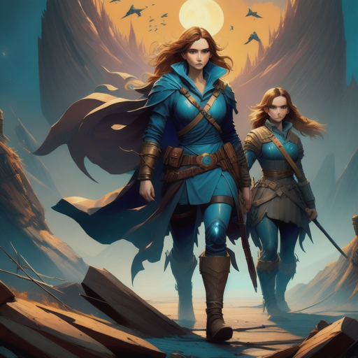

Sara and Jack chose to wield the power of the ancient artifacts for a greater good. They believed that with this power, they could bring about positive change and make the world a better place.
As they harnessed the artifacts' potential, they encountered new challenges and faced opposition from those who sought to control the power for their own gain.
Sophie, still worried but supportive, researched ways to aid Sara and Jack in their mission, connecting them with experts and allies who could help them in their quest.
The world became a battleground between those who wanted to protect the artifacts and those who craved their power.
Now, Sara, Jack, and Sophie had to navigate this dangerous terrain and make difficult choices to ensure the artifacts' power remained in responsible hands.
The Reconnection
Continue the fight to protect the artifacts.
Choose to confort those who seek to control the artifacts.